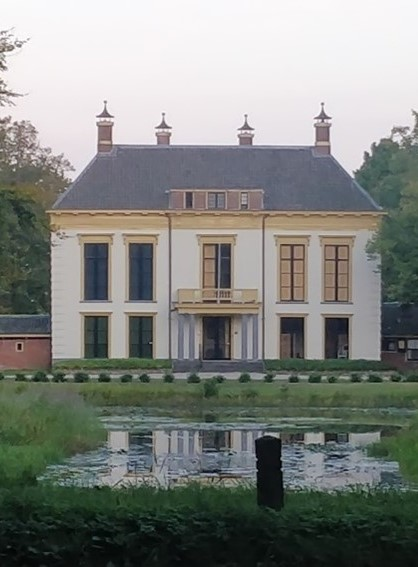
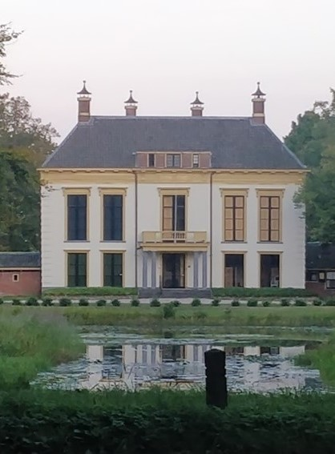
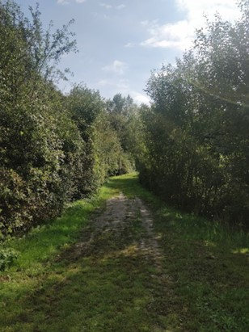
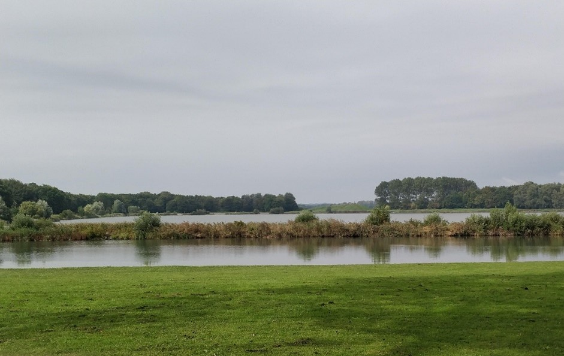

Het heilooërbos ligt net als Heiloo op een strandwal die circa 4000 jaar geleden gevormd
is. Aan beide zeiden van het bos bevinden zich weilanden. Het Heilooërbos maakt
deel uit van het landgoed Nijenburg, en was oorspronkelijk opgericht door de heren
Van Egmond van de Nijenbrug. Later tijdens het beheer van Conrnelis van Foreest
vond grote bebossing plaats. De reden hiervoor was vooral voor houtproductie.
Ook is hier de kattenberg te vinden, de kattenberg is een opvallende heuvel met
een grote en oude lindeboom er bovenop. Men vermoed dat de kattenberg kunstmatig
is en misschien uit de late middeleeuwen dateert. Wanneer het precies gemaakt was
(als het al kunstmatig van origine is) weet men niet, ook de functie ervan is niet bekend.
 

Het recreatiegebied Geestmerambacht ligt aan de westelijke zijde van de gemeente
Dijk en Waard in de provincie van Noord-Holland. Het gebied is aangelegd rond de
‘Zomerdel’ wat een groot meer is dat wordt omringd door weilanden en bossen.
Het gebied is ongeveer 200 hectare groot, waarvan 40 hectare bos gevuld is met wandel-
en fietspaden en 75 hectare water dat voldoet aan de voorwaarde om van zwemkwaliteit
te zijn. Er zijn onder anderen jaarlijks terugkerende festivals als het
Indian Summer Festival en Liquicity. De aanleg van het Geestmerambacht vond plaats in
1960 in het kader van ruilverkaveling. Ruilverkaveling is het ruilen van kavels,
wat stukken grond zijn met een bepaalde vorm vaak omringd door duidelijke grenzen
zoals heggen of sloten. Ook wilde men hier zand winnen. Het recreatiegebied
van het Geestmerambacht ligt daar middenin.


Het Noordhollands Duinreservaat is een gebied van 5300 hectare dat bestaat uit
bos en duinen, het ligt tussen Wijk aan Zee en Bergen. Op drie plaatsen
wordt in get gebied gebruikt voor drinkwaterwinning en is het beheer van PWN
(een waterleidingbedrijf).Vanaf 1960 nam het belang van recreatie en
natuurbescherming in het duingebied sterk toe, en is in de tweede helft
van de 20e eeuw overstap gemaakt tot voorgezuiverd rivierwater afkomstig uit
IJsselmeer en de Rijn. Wat op zijn beurt de ondergrondse watervoorraad weer
op peil moest brengen om de sterk gedaalde grondwaterstand tegen te gaan.